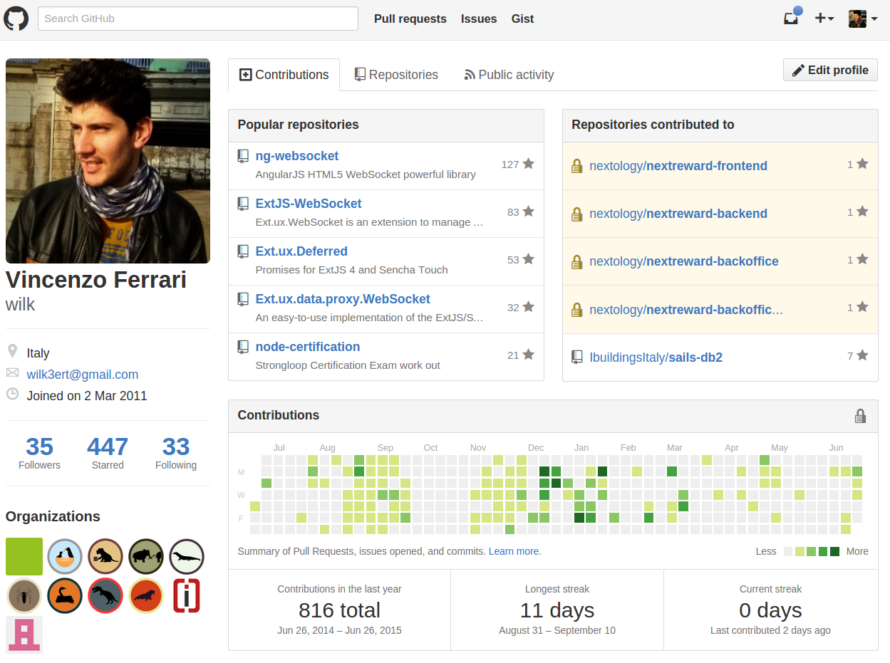

Abstract
AngularJS is a Javascript framework for building amazing Web Applications (those called SPAs).
When it's needed to bring them to mobile devices, Cordova/PhoneGap helps the integration and Ionic, built on top of AngularJS, comes with a great set of CSS components and cool Javascript features!
$ whoami
Vincenzo Ferrari >> Wilk
- Fullstack Web Developer
- Software Engineer at Ibuildings Italia
- Open Source Supporter
Github
Contacts
- Google+: +VincenzoFerrari
- Twitter: @__wilky__
- LinkedIn: Vincenzo Ferrari
- Stackoverflow: wilk
- Coderwall: wilk

Motivation
- Vast community
- bower.io/search/?q=angular : 4,991 matched results
- ngmodules.org/ : 1,480 registered modules
- stackoverflow.com/questions/tagged/angularjs : 102,280 questions tagged
- google.com/#q=angularjs : 14,900,000 results
Angular Overview

What's that?
AngularJS is a powerful JS framework for building advanced web applications and it comes with a lot of features:
- It's highly modular: everything can be seen as a separated module!
- It can be fully integrated with third party libraries
- It's born as a MVC, MVVM, MVP framework
- It's not meant to extend Javascript (you can continue develop with plain JS!)
- What about extending the HTML vocabular instead?
Bootstrapping
// index.html
<!doctype html>
<html>
<head>
<script src="bower_components/angular/angular.js"></script>
<script src="app/app.js"></script>
</head>
<body ng-app="module">
{{10 + 20}}
</body>
</html>
// app.js
angular.module('module', []);

One to Two-Way Data-Binding
Static DOM

Dynamic DOM

Template Engine
Why does Angular have a template engine?
RESTful single page web applications need to compile and render their markup. This means that only raw data is sent/received to/from the network.
How does it work?
The template engine works in two phases:
- Compile phase
- Link phase
Compile Phase
The compiler ($compile) traverses the DOM and collects all of the directives. The result is a linking function
Link Phase
It combines the directives with a scope and produces a live view.
Code sample
// index.html
<html ng-app="MyModule">
<body ng-controller="MyCtrl">
<input ng-model="text" type="text" />
<label>{{text}}</label>
<button ng-click="templateSubmit()">{{btnText}}</button>
</body>
</html>
// app.js
angular.module('MyModule', [])
.controller('MyCtrl', ['$scope', function ($scope) {
$scope.text = '';
$scope.btnText = 'Submit';
$scope.templateSubmit = function () {
alert("text value is: " + $scope.text);
};
}]);
Dependency Injection

What's DI?
Dependency Injection (DI) is a software design pattern that deals with how components get hold of their dependencies. The Angular injector subsystem is in charge of creating components, resolving their dependencies, and providing them to other components as requested.
Dependencies
AngularJS lets you to inject various types of dependencies:
- Angular built-in dependencies
- Vendor dependencies
- Personal dependencies
Code sample
angular.controller('MyCtrl', ['$scope', '$location', function ($scope, $location) {
// do something with $scope and $location services
}]);
var MyCtrl = function ($scope, $location) {
// do something with $scope and $location services
};
MyCtrl.$inject = ['$scope', '$location'];
angular.controller('MyCtrl', MyCtrl);
angular.controller('MyCtrl', function ($scope, $location) {
// do something with $scope and $location services
});
Directives

What is a directive?
Directives are markers on a DOM element that tell AngularJS's HTML compiler to attach a specified behavior to that DOM element or even transform the DOM element and its children.
Built-in directives
Angular comes with several useful built-in directives, such as:
- ngApp
- ngController
- ngModel
- ngRepeat
- ngClick
- ngView
https://docs.angularjs.org/api/ng/directive
Built-in directives are identified by the ng namespace.
Built-in directives in detail - 1
ngClick | ngDblclick | ngInit
ngClick and ngDblclick attach a listener on click and dblclick event of the element, while ngInit is used to initialize a variable in the current scope.
<button ng-click="aCount = aCount + 1" ng-init="aCount = 10">Click me<button>
<button ng-dblclick="count = count + 1" ng-init="count = 0">Double click me<button>
Built-in directives in detail - 2
ngIf | ngSwitch
Some directives change the DOM structure based on a scope expression. ngIf removes or recreates a part of the DOM depending on the evaluation of the expression, while the ngSwitch conditionally swap the DOM structure.
<input type="number" ng-model="value"/>
<small ng-if="value >= 0">Positive</small>
<div ng-switch="selection">
<div ng-switch-when="Go Lang">Go Lang</div>
<div ng-switch-when="Dart">Dart</div>
<div ng-switch-default>AngularJS</div>
</div>
Build your custom directives
https://docs.angularjs.org/guide/directive
One of the most powerful feature in AngularJS is the possibility to make custom directives. Like other Angular components, a custom directive is just a module.
Code sample
angular.directive lets you to register a new custom directive:
angular.directive('myClock', ['$interval', 'dateFilter', function ($interval, dateFilter) {
return {
restrict: 'E',
link: function (scope, element, attrs) {
$interval(function () {
element.text(dateFilter(new Date(), 'H:mm:ss'));
}, 1000);
}
};
}]);
<my-clock></my-clock>
Filters

What is a filter?
A filter formats the value of an expression. They can be used in view templates, controllers or services and it is easy to define your own filter.
Built-in filters
AngularJS has several built-in filters:
- currency
- date
- lowercase
- uppercase
- orderBy
Filters within templates
Filters can be applied to expressions in view templates using the following syntax:
{{ expression | filter }}
Filters may have arguments:
{{ expression | filter:argument1:argument2:... }}
It's possible to chain more filters:
{{ expression | filter1 | filter2 | ... }}
Filters within the application
Inject a dependency with the name <filterName>Filter to your controller/service/directive:
angular.controller('MyCtrl', ['dateFilter', function(dateFilter) {
var date = dateFilter(new Date(), 'Ymd');
}]);
Built-in filters in detail - 1
Currency
Formats a number as a currency.
{{amount | currency:'€':2}} or currencyFilter(amount, '€', 2);
{{amount | currency:'$':2}} or currencyFilter(amount, '$', 2);
{{amount | currency:'£':2}} or currencyFilter(amount, '£', 2);
Date
Formats date to a string based on the requested format.
{{today | date:'M/d/yyyy'}} or dateFilter(today, 'M/d/yyyy');
Built-in filters in detail - 2
orderBy
Orders a specified array by the expression predicate. It is ordered alphabetically for strings and numerically for numbers.
{{list | orderBy:predicate:reverse}} or orderByFilter(list, predicate, reverse);
- [[user.name]] - [[user.telephone]] - [[user.age]]
Define your custom filters
https://docs.angularjs.org/guide/filter
Writing your own filter is very easy: just register a new filter factory function with your module. This factory function should return a new filter function which takes the input value as the first argument. Any filter arguments are passed in as additional arguments to the filter function.
Code sample
angular.filter lets you to register a new custom filter:
angular.filter('star', ['uppercaseFilter', function (uppercaseFilter) {
return function (value, starNumber) {
value = String(value);
starNumber = starNumber || 0;
var stars = '',
result = [];
for (var i = 0; i < starNumber; i++) stars += '*';
result.push(stars);
result.push(uppercaseFilter(value));
result.push(stars);
if (value && value.length > 0) return result.join(' ');
else return '';
};
}]);
<p>{{name | star:starNumber}}</p>
Services
What's a service?
Angular services are substitutable objects that are wired together using dependency injection (DI). You can use services to organize and share code across your app.
Using a service
Angular has several built-in services and it's possible to use them with the Dependency Injection, like so:
angular.controller('MyCtrl', ['$http', function ($http) {
$http.get('/user')
.success(function (user) {
// Use the user data
})
.error(function (err) {
// Notify the error
});
}]);
A service can be used where it's possible to use the DI: in other services, directives, controllers and filters.
Built-in services
AngularJS has several built-in services:
- $http
- $q
- $location
- $compile
- $filter
Built-in services in detail - 1
$http
The $http service is a core Angular service that facilitates communication with the remote HTTP servers via the browser's XMLHttpRequest object or via JSONP.
angular.controller('MyCtrl', ['$http', '$scope', function ($http, $scope) {
$scope.getUser = function () {
$http.get('/Users.json')
.success(function (users) {
$scope.users = users;
});
};
}]);
| Name | Telephone | Age |
|---|---|---|
| [[user.name]] | [[user.telephone]] | [[user.age]] |
Built-in services in detail - 2
$location
The $location service parses the URL in the browser address bar (based on the window.location) and makes the URL available to your application. Changes to the URL in the address bar are reflected into $location service and changes to $location are reflected into the browser address bar.
angular.controller('MyCtrl', ['$scope', '$location', function ($scope, $location) {
$scope.url = {};
$scope.getUrl = function () {
$scope.url.absUrl = $location.absUrl();
$scope.url.url = $location.url();
$scope.url.protocol = $location.protocol();
$scope.url.host = $location.host();
$scope.url.path = $location.path();
$scope.url.port = $location.port();
};
}]);
[[url]]
Creating a custom service
angular.service allows to define a new service:
angular.service('Mario', ['$http', '$log', function ($http, $log) {
this.salutation = function () {
alert('Hi, I\'m Mario!');
};
this.findLuigi = function () {
$http.get('/luigi')
.success(function (luigi) {
alert('I found you, Luigi!');
$log.debug(luigi);
});
};
}])
.controller('MarioCtrl', ['Mario', function (Mario) {
Mario.salutation();
Mario.findLuigi();
}]);
Angular-UI
Chemical Composition
Angular-UI is a suite that comes with a set of libraries for Angular:
- UI Utils
- UI Modules
- UI Bootstrap
- NG Grid
- UI Router
UI Utils
http://angular-ui.github.io/ui-utils/
A utility package with no external dependencies: each module is contained in this package but can be included individually.
UI Modules
Standalone AngularUI modules with external dependencies:
- ui-ace: Ace IDE module
- ui-calendar: web calendar view module
- ui-map: Google Maps module
- ui-date: module for a date picker
UI Bootstrap
http://angular-ui.github.io/bootstrap/
Twitter Bootstrap written natively in AngularJS. This repository contains a set of native AngularJS directives based on Bootstrap's markup and CSS. As a result no dependency on jQuery or Bootstrap's JavaScript is required.
ngGrid
http://angular-ui.github.io/ng-grid/
Grid virtualization written natively in AngularJS and JQuery. ngGrid comes as an attribute requiring a configuration object:
// views/grid.html
<div class="gridStyle" ng-grid="gridOptions"></div>
// app.js
angular.module('MyModule', ['ui.grid'])
.controller('MyCtrl', ['$scope', function ($scope) {
$scope.myData = [
{name: "Moroni", age: 50},
{name: "Tiancum", age: 43},
{name: "Jacob", age: 27},
{name: "Nephi", age: 29},
{name: "Enos", age: 34}
];
$scope.gridOptions = {data: 'myData'};
}]);
Conclusion
Why Angular?
- Open Source
- Highly Modular
- Multi Pattern (MVC, MVVM, MVP: MVW)
- Template Engine (with custom filters)
- Extend the HTML (directives)
- Reuse code (services)
- Built with testability in mind
- Pure Javascript
- Tons of modules and documentations
- Best for single page web application

Ionic Framework
What is it?
Free and open source, Ionic offers a library of mobile-optimized HTML, CSS and JS components, gestures, and tools for building highly interactive native/hybrid apps. Built with Sass and optimized for AngularJS.
What is it composed of?
It's composed of:
- AngularJS: the Javascript part is satisfied by Angular
- CSS/SASS: a set of CSS/SASS classes that can be overridden by new ones
- Ionic Client: a tool built with NodeJS that helps you with your project
External features
The Ionic team is developing a set of useful services all around the platform:
- Ionic Creator: a handy web UI designer
- Ionic Push: a set of APIs for sending Push Notifications to every platform
- Ionic Learn: videos, tutorials, and formulas built and maintained directly by the core team
- Ionic View: test and share your applications without ever going through the App Store
- Ionic.io: a web platform that contains all of these services
Components
Buttons
Lists
Cards

Marty McFly
November 05, 1955

This is a "Facebook" styled Card. The header is created from a Thumbnail List item,
the content is from a card-body consisting of an image and paragraph text. The footer
consists of tabs, icons aligned left, within the card-footer.
Forms
Components
http://ionicframework.com/docs/components/
Ionic comes with serveral useful components:
- header and footer bars
- buttons (with icons)
- lists
- cards
- forms
- HTML5 input types
- tab panels
- grids
Javascript and HTML Features
Popup
angular.module('app', ['ionic'])
.controller('ctrl', ['$scope', '$ionicPopup', '$timeout', function ($scope, $ionicPopup, $timeout) {
$scope.showPopup = function() {
$scope.data = {};
var myPopup = $ionicPopup.show({
template: '',
title: 'Enter Wi-Fi Password',
subTitle: 'Please use normal things',
scope: $scope,
buttons: [
{ text: 'Cancel' },
{
text: 'Save',
type: 'button-positive',
}
]
});
$scope.showConfirm = function() {
var confirmPopup = $ionicPopup.confirm({
title: 'Consume Ice Cream',
template: 'Are you sure you want to eat this ice cream?'
});
$scope.showAlert = function() {
var alertPopup = $ionicPopup.alert({
title: 'Don\'t eat that!',
template: 'It might taste good'
});
};
}]);
Tabs
angular.module('app', ['ionic'])
.config(function($stateProvider, $urlRouterProvider) {
$stateProvider
.state('tabs', {
url: "/tab",
abstract: true,
templateUrl: "templates/tabs.html"
})
.state('tabs.home', {
url: "/home",
views: {
'home-tab': {
templateUrl: "templates/home.html",
controller: 'HomeTabCtrl'
}
}
})
.state('tabs.facts', {
url: "/facts",
views: {
'home-tab': {
templateUrl: "templates/facts.html"
}
}
})
.state('tabs.facts2', {
url: "/facts2",
views: {
'home-tab': {
templateUrl: "templates/facts2.html"
}
}
})
.state('tabs.about', {
url: "/about",
views: {
'about-tab': {
templateUrl: "templates/about.html"
}
}
})
.state('tabs.navstack', {
url: "/navstack",
views: {
'about-tab': {
templateUrl: "templates/nav-stack.html"
}
}
})
.state('tabs.contact', {
url: "/contact",
views: {
'contact-tab': {
templateUrl: "templates/contact.html"
}
}
});
$urlRouterProvider.otherwise("/tab/home");
})
.controller('HomeTabCtrl', [function () {}]);
Features
http://ionicframework.com/docs/api/
CSS components are not the only important thing. Ionic has got lots of Javascript features:
- action sheet
- events
- lists
- gestures
- navigation
- utility
Ionic Client
https://github.com/driftyco/ionic-cliWhat's provided?
Ionic Client provides a set of useful commands and makes it easy to start, build, run and emulate Ionic apps.
Current version: 1.5.5
Install it globally via NPM:
# npm install -g ionic
Features
Use it during development to avoid boilerplates and to setup the environment:
$ ionic start mySuperApp tabs
$ ionic serve
Use it to mobile support:
$ ionic platform add android
$ ionic build android
$ ionic emulate android
Getting started
Try it out!
$ sudo npm install -g cordova ionic
$ ionic start myAwesomeApp tabs
$ cd myAwesomeApp
$ ionic setup sass
$ ionic serve
$ ionic platform add android
$ ionic build android
$ ionic emulate android
ngCordova
Working with the OS
ngCordova is a collection of 63+ AngularJS extensions on top of the Cordova API that make it easy to build, test, and deploy Cordova mobile apps with AngularJS.
Available plugins
Following a list of available plugins:
- Camera
- Contacts
- Geolocation
- Preferences
- Push Notifications
Getting started
Install it via bower:
$ bower install ngCordova
Include it in your index.html:
Then, use it in your application:
angular.module('mySuperApp', ['ionic', 'ngCordova']);
.controller('aCtrl', ['$ionicPlatform', '$cordovaCamera', function ($ionicPlatform, $cordovaCamera) {
$ionicPlatform.ready(function () {
$cordovaCamera.getPicture(options).then(function(imageData) {
var image = document.getElementById('myImage');
image.src = "data:image/jpeg;base64," + imageData;
});
});
}]);
Conclusion
Why Ionic?
- Open Source
- Built on top of AngularJS
- It helps for creating native/hybrid mobile web apps
- Highly integrated with Cordova
- Huge features set (directives, services, providers)
- It comes with handy tools
- Tons of modules and documentations
Thank you!
Questions?